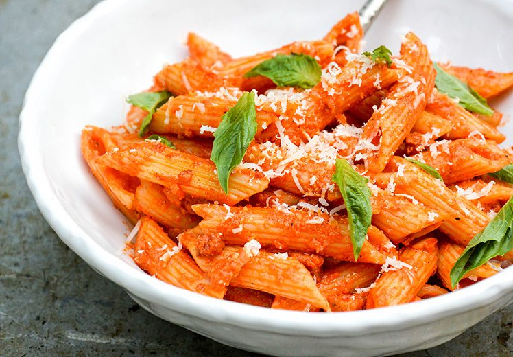

Pasta is good
This some good ass pasta

My go-to pasta meal anytime I'm not sure what to eat.
- Penne Pasta
- Tomato Sauce
- Basil
- Paraseaun Cheese
- Garlic Powder
- Salt
Here is the recipe, step by step:
- Boil water in a pot, put some salt in to lower the boiling temperature
- Wait for water to boil, and put pasta in, then stir
- After approx. 9-12 minutes, pasta will be done
- Strain water out and put pasta aside
- Put tomato sauce into the hot pot
- Toss some basil in with the sauce, give it a stir, then add the pasta back and stir until every piece is coated
- Add a little garlic powder over the top and then add pasta to bowl
- Add as much cheese on as you would like
And Viola! Your jared's speciality pasta is complete and ready for enjoyment!